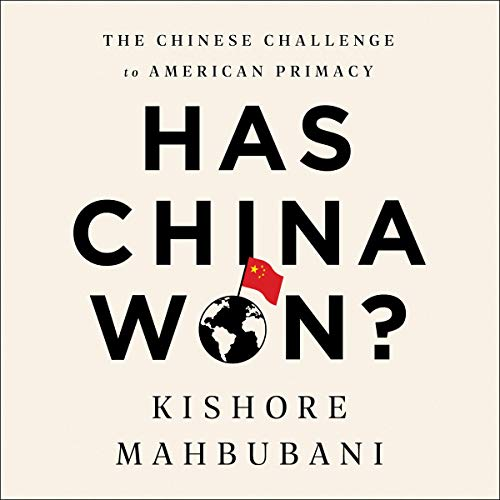

收录于合集


新书简介

《 中国赢了吗？》 ****
作者：[新加坡] 马凯硕（Kishore Mahbubani）
出版日期：2020年4月
定价：19.11美元
ISBN-10: 1541768132
ISBN-13: 978-1541768130
推荐语
中国和美国是当今世界的两大强国，双方隔太平洋相望，是彼此最大的竞争对手。
中美之间有许多差异。美国重视个人行为的自由，中国重视集体秩序不受混乱干扰的自由；美国重视战略决断力，中方重视战略耐心；美国长期以来积累的社会不平等渐露端倪，而中国也渐显精英主义的趋势；美国正逐渐背离多边主义，中方则对多边合作表示欢迎。作者认为，两国之间缺乏沟通，并似乎缺乏相互间天然的同理心。21世纪最为决定性的地缘政治竞争已然拉开序幕。
作为一位对北京与华盛顿决策者均有深刻了解的外交官与学者，作者马凯硕在本书中系统地分析了中美两国对抗的风险，并对两国的优势与弱点分别进行了客观的评估。
作者介绍
马凯硕 (Kishore Mahbubani) ，新加坡外交家及学者，新加坡国立大学亚洲研究所杰出研究员，曾担任联合国安理会主席、新加坡国立大学李光耀公共政策学院院长等职务。他撰写了大量有关亚洲崛起、地缘政治和全球治理的作品，包括《亚洲人能思考吗？》、《中国赢了吗？》。马凯硕曾被《外交政策》和《展望》杂志列为全球前100公共知识分子之一，被英国《金融时报》列为影响资本主义未来辩论的前50人之一。
名人推荐 ****
中国和美国正陷入争夺国际主导地位的斗争中，这场竞赛的结果将塑造未来几个世纪的世界秩序。马凯硕以应有的细致入微的审慎和清晰的洞察力捕捉到了这场战斗的复杂性。本书不容错过。
——伊恩·布雷默，欧亚集团总裁、著有《US vs. Them》
马凯硕的《中国赢了吗？》是一份严肃的作品：它回顾了从凯南到肯尼迪的战略智慧，提出了有关中国崛起的具有争议性、甚至是与传统观点相悖的问题，并为一个安全的多元化世界提供了建议。
——格雷厄姆·艾利森，哈佛大学道格拉斯·狄龙政治学教授，著有《注定一战:美国和中国能逃脱修昔底德陷阱吗？》
受益于其人生经历，马凯硕在外交和国际关系方面有着深厚的经验，在复杂的环境中能够以罕有而高度发达的方式进行战略性的思考，同时具备联结和尊重多种文明及其价值观的独特能力。这些技巧、见解和经验都在他的新书《中国赢了吗？》中淋漓尽致地展现。这是一个具有争议性的标题，但有一些误导性。事实上，他以一种公正的方式分析了中美之间可能出现的竞争局面。作者对中美双方持有的偏见和错误进行了一针见血而尤为关键的评估。本书的优点之一是它会把大多数读者带出他们的舒适区。书中不乏许多深刻的见解，但其核心命题是：随着时间的推移，中美竞争的结果将主要取决于双方是否有足够的胸怀理解和尊重彼此长年累月铸就的文化差异，这些差异导致了两国各自不同的治理结构和对个人自由、社会与政治稳定以及其他事物的不同价值观。换句话说，两国都需要设身处地理解世界。尽管如此，中美之间仍存在着广泛的共同利益。抛开书名不谈，正如马凯硕在书的结尾所写，一个很明显的道理是：要么所有人（不仅仅是中国和美国）都赢，要么所有人都输。这是历史关键时刻中的一本重要著作。
——迈克尔·斯宾塞，2001年诺贝尔经济学奖得主
《中国赢了吗？》是一个具有争议性的标题。马凯硕在他的新书中解释了为什么这实际上是一个错误的问题。尽管中美之间的怨恨和相互误解不断增加，但两国都知道他们之间的战争最终将是灾难性的。在这本具有启示性的新书中，马凯硕呼吁这两个大国保持深度的理性。他认为，我们这个时代最大的挑战将是回答“人类赢了吗”这个问题。美国和中国读者都将从马凯硕的智慧中受益。
——杨荣文，新加坡前外交部长
美国人应该听从马凯硕的忠言，尽管这些建议可能有些逆耳：抛弃有关美国永久领先地位和由高墙保护的非凡美德的幻想。相反，华盛顿应该采取以平衡与合作为基础的长期国际战略：重新构建健全的内部领导和治理；在国外争取盟友，而不是赶走盟友；应避免过度承诺；表现出道德上的谦逊。军事实力并非民主兵工厂中最重要的武器。
——大卫·兰普顿，约翰斯・霍普金斯大学高级国际研究学院名誉教授、斯坦福大学亚太研究中心弗里曼·斯波利研究所Oksenberg-Rohlen研究员
长期以来，马凯硕一直在颂扬西方向世界其它地区传授的知识，而包括中国和印度在内的许多亚洲地区已从中受益。然而，对于中国从美国学到的东西，似乎没有人比美国自己更感到惊讶了。美国现在已经完全将中国视为威胁其全球主导地位的竞争对手。马凯硕尖锐地质问：中国到底做了什么，才落得这样的下场？他比以往任何时候都更深入地启发读者，让他们去思考任由这种竞争发展下去会产生的后果。
——王赓武，新加坡国立大学教授
马凯硕有一种非凡的能力，能看穿那些导致大国误入歧途的自以为是的正统观念。《中国赢了吗？》一书指出了当今破坏中美两国与彼此以及世界其他国家关系的迷思和错误，并为两国如何在未来做得更好提供了坦率和清晰的建议。中美领导人不会喜欢他所有的话，但他们最好还是密切关注一下。你也应该如此。
——斯蒂芬·华特，哈佛大学罗伯特及勒内·贝尔弗国际关系教授
无论我们视中国为朋友、对手，还是介于两者之间，我们都需要知道中国在世界层面上如何看待自己。对于西方人来说，没有比马凯硕更好的亚洲世界观向导了。他在这本至关重要的书中分享了他丰富的知识和经验。
——劳伦斯·萨默斯，美国前财政部长、哈佛大学前校长
好好学习，天天“在看”